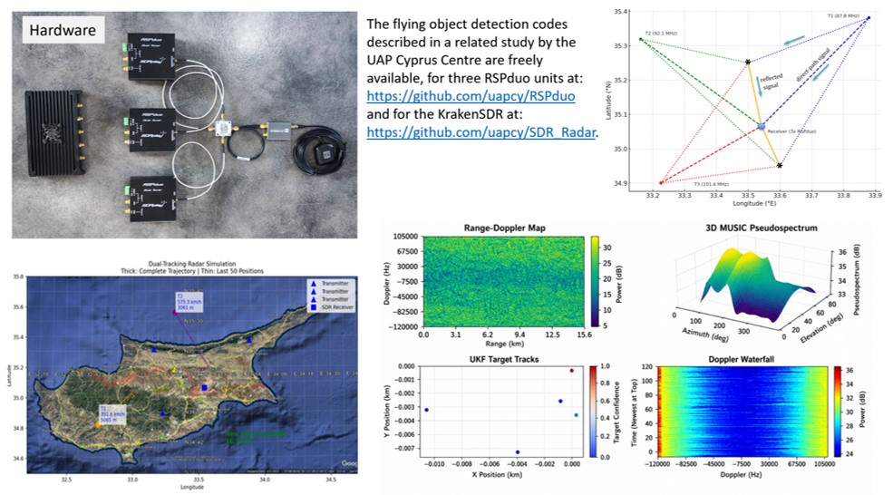

Description
SkyWatch is a decentralised network of citizen-deployed radar receivers that generates a real-time map of UFO flight patterns. The system uses passive radar techniques — listening to reflections of existing commercial broadcast signals rather than emitting its own radar pulse — to detect and track aerial objects.
Mitch Randall of Ascendant AI developed and deployed a proof-of-concept system with Harvard's Galileo Project as a Research Team member. The concept relies on the principle that a moving object reflects broadcast signals, and by correlating the direct signal with the reflected signal across multiple receivers, the object's position and velocity can be recovered.
UAP Cyprus publishes its own RSPduo and KrakenSDR code as open source, allowing other researchers to build equivalent stations and contribute to the network.
Hardware

Open-Source Code & Network
The codes described in the related study by the UAP Cyprus Centre are freely available for three RSPduo units and one KrakenSDR unit:
github.com/uapcy/RSPduo →
github.com/uapcy/SDR_Radar →
SkyWatch network information: